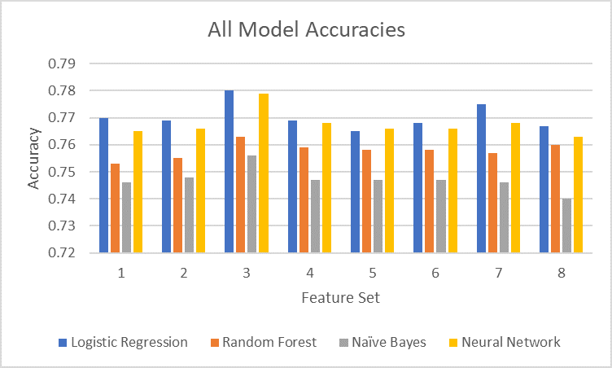

Introduction and Motivation
The March Madness Tournament is the biggest college basketball tournament in America. Millions of people fill out brackets in hopes of correctly predicting the tournament and winning competitions and bets. However, in all the years the tournament has occurred, not a single person has created the perfect bracket yet.
Being able to predict a tournament correctly would be revolutionary in the world of sports betting. It would also allow insight in basketball analysis. If some stats are more important than others and lead to more wins on average, coaches would know what the best way is to practice. Basketball is an extremely complicated sport where all sorts of upsets could happen. By using machine learning techniques, such as neural networks and random forests, we hope to find what causes a team to push through a tournament and win it all.
Dataset
The dataset was acquired from Kaggle’s 2019 March Madness competition. The dataset had recorded games from 2003-current and included regular season as well as tournament games, totaling to over 88000 games. The dataset included 14 features such as free throws made, steals, and offensive rebounds. For each game, the stats for each of those features was recorded and used in our analysis. Fortunately, all the data was already quantified so we didn’t have to do it ourselves.
Approach
We evaluated all the games using different subsets of features. One subset could be using 3 pointers made, turnovers, and field goals made, and score, while another subset could be fouls, assists, and defensive rebounds. We used sets of features that we thought would perform the best and compared the results against other sets.
The different supervised learning models we used were Logistic Regression, Random Forests, Naïve Bayes, and Neural Networks. Additionally, we used XGBoost as a means of increasing the accuracy of our results as well as incorporating a new feature, seeding, when we construct our bracket. Since we had multiple models that worked well, we decided to implement a new method which would pick the most confident choice out of all the models.
Logistic Regression
Logistic Regression is a discriminative model that calculates the probability of a data point being in a specific class, in this case the probability of a team winning or losing.

Random Forests
Random Forests is an ensemble method performed by bagging multiple random decision trees. Bagging combines multiple decision trees to reduce the final variance which should improve the accuracy of the model.

Naïve Bayes
Naïve Bayes is a generative model working under the assumption that features are independent and classifies the data regardless of correlations between features.

Neural Networks
Neural Networks use a multitude of different nodes that sum up a series of weights for all the features to produce an output.

XGBoost
XGBoost is an ensemble learning method similar to random forests in that it uses decision trees but uses gradient boosting. It helps to minimize both bias and variance by using a multitude of decision trees.
Seeding
Upsets in basketball occur when a higher seeded team loses to a much worse team. Of the 63 games played over the course of each tournament since 1985, there has been on average 12 upsets per tournament. Due to this, we created a higher threshold for lower seeded teams to win; teams that are lower seeded need to have higher than a 50% chance to win in order to move on in the bracket.
Results
Seeding
XG Boosting
Combining our models: Pick Most Confident
We wrote a script that would compare bracket predictions from our best models, which were logistic regression and neural networks. The script would compare the predictions in the two models and choose the prediction that had higher certainty, meaning the difference between winning rate of the two teams. The reason behind such decision was that the two models, logistic regression and neural networks had similar accuracy so we tested if combining the two models would improve our accuracy. There was a small improvement made. _INSERT STATISTIC_
Overall result
We evaluated each model using the log-loss for the 2018-2019 March Madness tournament as well as how many points the bracket would generate in the NCAA competition. Logistic Regression, along with Neural Networks, performed the best out of the first four techniques and usually had a very close accuracy with Neural Networks. This is most likely the case because of the Neural Network’s own logistic regression it uses to calculate the weights. Out of all the feature sets, Naïve Bayes consistently performed the worst and had the worst accuracy on the training data. Most notably, the classifier was extremely confident in all of its predicted matchup s, even though it predicted many of them incorrectly. Random Forests consistently performed worse than both Neural Networks and Logistic Regression but better than Naïve Bayes.
